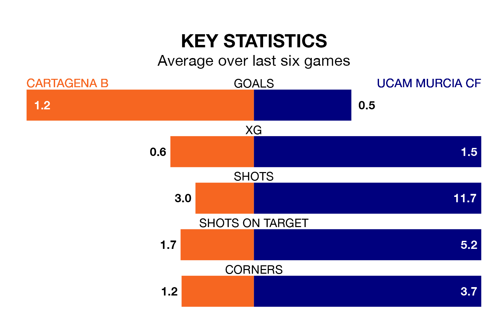

Struggling Cartagena B face UCAM Murcia CF at the Estadio Municipal Cartagonova on Sunday looking to build on a win in their last league outing.
After securing all three points with a 2-0 victory over Vélez on January 28, Cartagena B sit bottom of Segunda División RFEF Group 4.
They travel to play an UCAM Murcia side ninth in the standings, who lost in their last match, 2-0 against Orihuela CF.
Cartagena B are in mixed form in Segunda División RFEF Group 4, with two wins and three draws from their last six games.
With a win and a draw over that period, UCAM Murcia's form is worse – they have taken four points from 18, compared to the home side's nine.
With 16 goals in 20 games so far this season, Cartagena B are scoring at below the league average rate with 0.8 goals per game. And they are conceding more than average, letting in 32 goals at a rate of 1.6 per game.
The visitors, meanwhile, are average scorers, with 1.0 goal per game. They have conceded 1.1 goals per game.
In the last three years, Cartagena B and UCAM Murcia have played each other on three occasions. Cartagena B won one of them and UCAM Murcia the other.
Their last meeting was on September 24, when UCAM Murcia won 3-0 at home.
Updated: 10:03 (UTC), 30/01/24